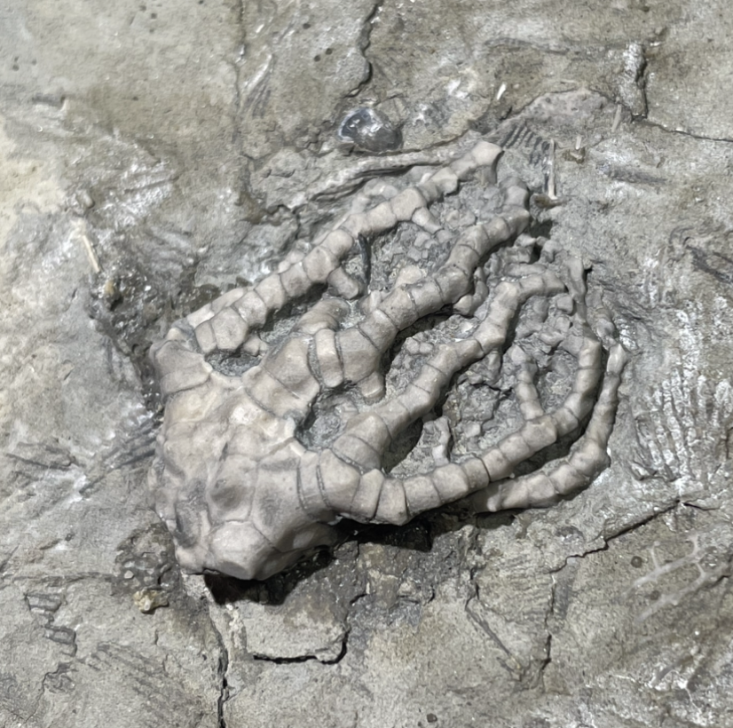
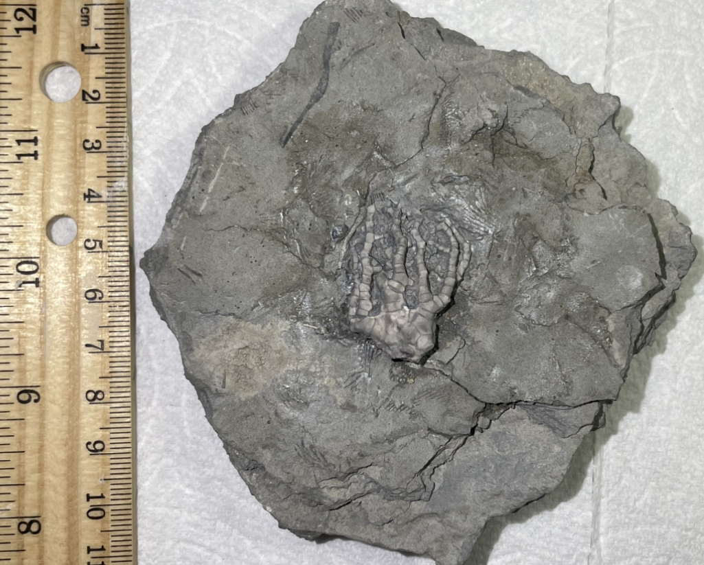

Barycrinus stellatus
Mississippian
Edwardsville Formation
Monroe Co., Indiana, USA
Size: ~3.5 cm crown
ID: S3-Cri-Mis-Edw-Bar
PRICE: $50
A nicely-preserved claw-like cladid crinoid from Indiana; Monroe Co., has similar crinoids but a more obscure and unusual site than Crawfordsville
|

|
Copyright © 2024 by Samuel Kim, all rights reserved